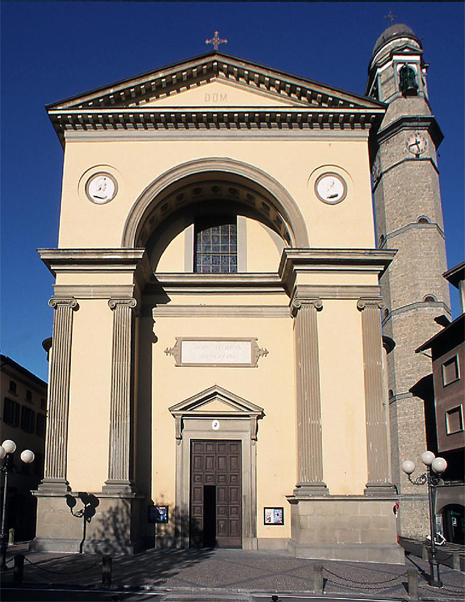
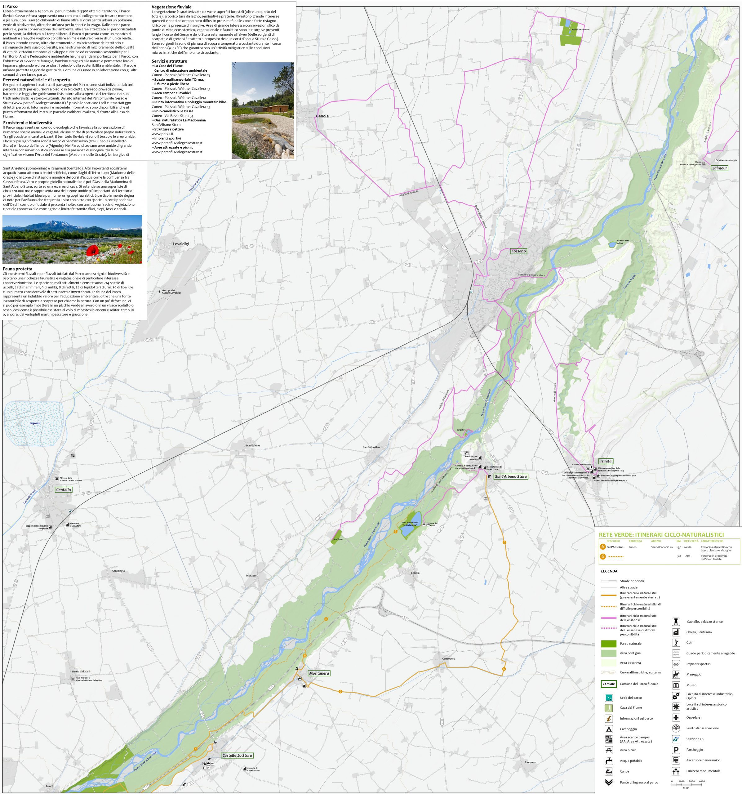
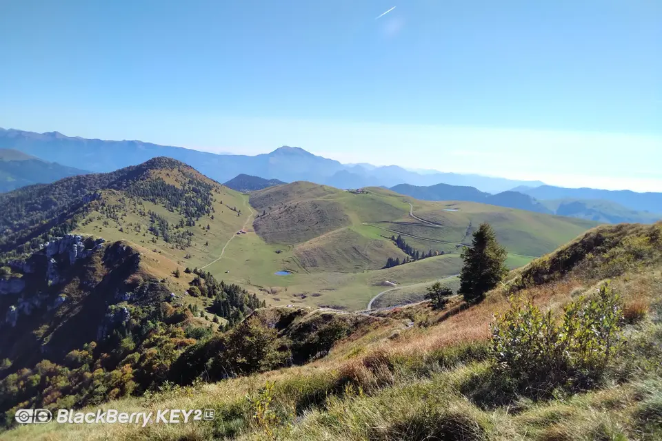

il territorio di Leffe
il comune di Leffe si trova in un contesto collinale delle prealpi bergamasche,
immerso tra boschi sentieri e aree panoramiche. Il suo territorio combina natura,
storia e tradizioni locali,offrendo numerosi punti d'interesse e percorsi da scoprire.
caratteristiche del territorio
Leffe si sviluppa su un territoriocollinare,
con alture che raggiungono i 600-700 metri e che offrono scorci panoramici
sulla val gandino e sulle prealpi. il paesaggio e caratterizato da zone boschive e rurali,
terrazze coltivate e percorsi naturalistici perfetti per passegiate ed escursioni.
- altitudine media:500 m s.l.m
- ambiente:collinare e prealpino
- zone verdi e boschive estese
- sentiero e percorsi panoramici
punti di interesse
- La Chiesa di San Michele-edificio religioso di valore artistico.
- Il Parco Fluviale-area naturalistica lungo il corso d'acqua.
- Il Belvedere- Punto panoramico sulla valle.
galleria fotografica

La Chiesa di San Michele- Uno dei simboli religiosi del paese

Leffe centro- Vista

Il Parco Fluviale- Sentieri e natura lungo il corso del torrente.

Il Belvedere- Punto panoramico sulle prealpi bergamasche
percorsi naturali e aree verdi
Leffe offre diversi percorsi imersi nella natura,adatti sia a famiglie sia ad escursionisti.
Le aree verdi sono ben mantenute e permettono di scoprire scorci suggestivi del territorio.
- Sentiero del Monte Croce-Itinerario panoramico travbosch e crinali.
- Pista ciclabile della VallGandino-Percorso adatto a biciclette e famiglie.
- Parco Fluviale-Aree verdi attrezate e camminate lungo il territorio.
- Percorso del Belvedere-Passegiata breve con vista sulla valle.